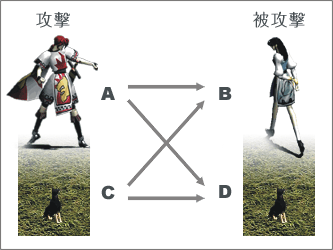

|
2002年5月17日
有關寵物不能獵取道具的問題
香港伺服器在更新後寵物不能獵取道具的問題，官方將會在下星期修正，以下內容轉載自香港天堂官方公告：
有關5月17日更新項目之內容第18點：當寵物、迷魅或召喚的怪物身上放滿道具後，再得到的道具不會消失而會掉到地上。
關於某些道具不能正常掉落到寵物、迷魅或召喚的怪物身上之問題，已經向韓國有關方面反映。如有最新消息及方案，我們會另行公布。
香港伺服器5月17日更新內容
香港伺服器在5月17日突然大幅度地更新了，當中最大的分別就是原本會上寵物身上的道具，變為會直接掉下在地上！即是說寵物身上不會有任何道具，召喚師在寵物殺死怪物後都要忙著F4．．．
另一可怕的更新便是大部分擁有綠色藥水的怪物在看到玩家後都會立即使用！
當然亦有一些對玩家有利的更新，例如角色的等級與敏捷會加強防禦力，寵物會顯示血條等。
有關詳細內容轉載自香港天堂官方網站公告：
| 更新內容 |
- 在升級時可以看到新的升級動畫。
- 火龍窟內的一些地方變更為不能bookmark。而以前這些地區的bookmark將會被刪除。
- 修正火龍窟內有霧的地區或其他異常地形難於選擇目標的bug。
- 當玩家裝備上能夠增加體力或魔力最大值的道具時，在重登後將不會扣除體力或魔力。
- 新增了項鍊、皮帶及介指等道具，可從怪物身上獵取。(參照道具列表）
- 新增高級自我加速藥水，效果持續30分鐘。可在商店買賣，亦可從怪物身上獵取。
- 伊娃王國(海底都市)的商人巴克休，亦會售賣伊娃的祝福。
- 新增煙花商人(風木、肯特、海音、奇岩、燃柳及威頓村莊內)。
- 加速術、自我加速藥水、勇敢藥水及精靈餅乾的效果不能累積，而加速術的持續時間則延長至5分鐘。
- 製作精靈餅乾的材料中，刪除了魔法寶石。
- 不能將道具拖曳給訓練用的木人及NPC商人身上。
- 新增了「垃圾桶」(位於道具欄的右下方)，玩家可以自行刪除不需要的道具。
- 按照等級和角色的基本敏捷值而額外增加防禦力(使用道具而增加的敏捷值並不會計算在內)：
-
-
| 敏捷值 |
每隔以下等級增加防禦力(AC值
-1) |
| 18 |
4 |
| 16 - 17 |
5 |
| 13 - 15 |
6 |
| 10 - 12 |
7 |
| 7 - 9 |
8 |
- 例：
- 等級20 敏捷值15
的角色，AC值會額外 -3
- 等級20 敏捷值18
的角色，AC值會額外 -5
- 等級40 敏捷值15
的角色，AC值會額外 -6
- 等級40 敏捷值18
的角色，AC值會額外 -10
- 復活已死的怪物時，持續加速的bug修正了。
- 怪物死了之後，消失的時間從1分鐘變更為45秒。寵物死後消失的時間延長至5分鐘。
- 把已鑑定的狗圈放在交易窗時，可以看到寵物的名字及等級。
- 寵物、迷魅及召喚的怪物的頭上會顯示血量指標(HP
bar)。
- 當寵物、迷魅或召喚的怪物身上放滿道具後，再得到的道具不會消失而會掉到地上。
- 寵物到達25級之後，每次升級都會有持續一個小時的加速效果。
- 當寵物的飢餓度到達非常餓時，寵物會不聽從主人的命令，而不會野生化。只要給它一塊肉就會再次聽從命令。
- 如角色突然斷線，所帶領的寵物會自動存到寵物託管處。
- 寵物 / 迷魅 / 召喚 / 造屍 的怪物，攻擊 /
被攻擊的系統變更。詳細解釋如下：
-
-
|  |
| 攻擊方 |
攻擊 |
被攻擊方 |
說明 |
| 角色A |
--> |
角色B |
角色A的名字會變紫
(在此期間攻擊或殺死角色A亦不會變成邪惡)
如角色B被角色A殺死：
角色A的正義值會變成負數(邪惡)，角色A的PK值加1 |
| 角色A |
--> |
角色B的寵物D |
角色A的名字會變紫
(在此期間攻擊或殺死角色A亦不會變成邪惡)
如寵物D被角色A殺死：
角色A的正義值會下降3000，角色A的PK值不變 |
| 角色A的寵物C |
--> |
角色B |
角色A及寵物C的名字會變紫
(在此期間攻擊或殺死角色A
/ 寵物C亦不會變成邪惡 /
被扣減正義值)
如角色B被寵物C殺死：
角色A的正義值會變成負數(邪惡)，角色A的PK值加1
※如寵物因暴走而攻擊或殺死其他角色，系統亦會當作相同情況處理。故玩家應小心管理閣下之寵物。 |
| 角色A的寵物C |
--> |
角色B的寵物D |
角色A及寵物C的名字會變紫
(在此期間攻擊或殺死角色A
/ 寵物C亦不會變成邪惡 /
被扣減正義值)
如寵物D被寵物C殺死：
角色A的正義值會下降3000，角色A的PK值不變
※如寵物因暴走而攻擊或殺死其他寵物，系統亦會當作相同情況處理。故玩家應小心管理閣下之寵物。 |
- 高智力的法師使用木乃伊的詛咒、壞物等魔法時會有較佳的成功率。
- 使用毒咒攻擊名字變紫的玩家時，將不會損失正義值。
- 被卡司特攻擊而中毒時，其他已中毒的效果會被取消。
- 頭目級怪物（包括：巴風特、巴列斯、不死鳥、巨蟻女皇及死亡騎士）、地龍、水龍及火龍的能力值作出了調整。(參照怪物一覽表）
|
|